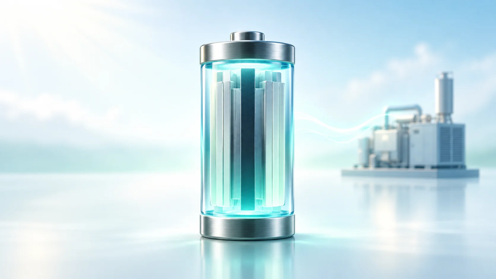
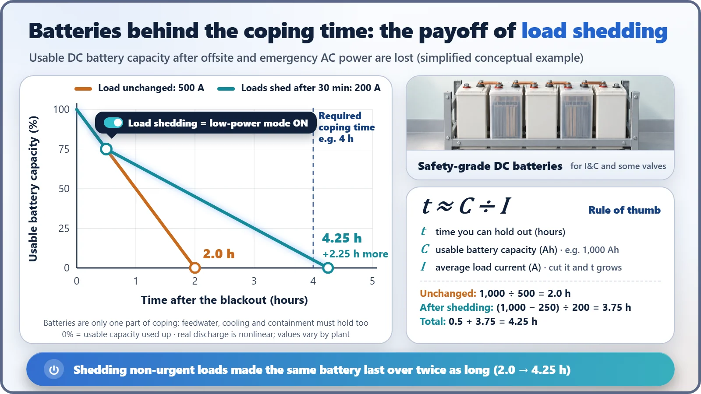

Safety Principles & Accident Analysis · 214
Like Switching On Low-Power Mode at 20% — Station Blackout (SBO) and the Time a Plant Must Hold Out
When both the grid and the emergency diesels are gone, a nuclear plant stretches its batteries, cools with steam, and races to bring AC power back.

A station blackout (SBO) is the state in which a nuclear plant has lost both its outside power and its emergency diesel generators, so all AC power inside the plant is gone. By definition the DC batteries remain. Steam-driven pumps keep cooling the reactor while the batteries run the instruments and valves, and the plant must hold out for its coping time, stretched by load shedding, until alternate AC sources or mobile equipment restore power.
Low-power mode at 20%
A night walk with no charger, and your phone says 20%. What do you do? You dim the screen, close the apps you're not using and turn on low-power mode. You can't make a new battery, so you stretch what you have until you reach a charger.
Nuclear power plants have rules for exactly this kind of moment. The name is station blackout, or SBO. Let's look at what a plant holds out with, and for how long, when it loses all of its AC power.
The step after a blackout: what exactly has gone dark?
A loss of offsite power is when the outside transmission grid is cut off; in that case the emergency diesel generators rush in and restart the big pumps. SBO is the next step. On top of losing outside power, the emergency diesels are also all unavailable, so all AC power inside the plant is gone.[1]
There's one important qualification. By definition, an SBO does not include losing the DC batteries. The batteries are assumed to still be there. Losing the batteries too is a more serious, separate situation. And this isn't purely hypothetical. It actually happened in 1990 at the Vogtle plant in the US[8] and in 2012 at Kori Unit 1 in South Korea, in both cases while the reactors were shut down for maintenance. Power came back in about 12 minutes at Kori 1[10] and about an hour at Vogtle.[3]
The big pumps stop, and steam does the work
Even after the reactor stops, the fuel keeps producing decay heat. The problem is that most of the large pumps that removed this heat run on AC motors. In an SBO, they all stop at once.
So what's left? In a pressurized water reactor, the turbine-driven auxiliary feedwater pump, which runs on steam made by the reactor, feeds water to the steam generators, and the resulting steam is released through valves to the atmosphere, carrying the heat away. The batteries act as the brain, controlling this pump and the valves and keeping the instruments on. The key point is that the batteries don't drive the pump themselves.
This arrangement can't last forever, though. The batteries run down, the water in the auxiliary feedwater tank drops, and equipment rooms with no ventilation get hotter and hotter. Water may also slowly leak from the seals of the coolant pumps. That's why "how long can it hold out?" becomes the central question of an SBO.[3]
Coping time: calculating how long to hold out
This holding-out time is called the coping time: the time over which core cooling and the containment building must be protected until AC power returns. Looking only at the batteries, the relationship is simple.
t ≈ C ÷ I, where t is the time you can hold out, C is the battery capacity (ampere-hours, Ah) and I is the average load current (amperes, A).
Draw 500 A continuously from a 1,000 Ah battery and it's empty in 2 hours. But what if, after 30 minutes, you keep only the essential loads and cut the draw to 200 A? The remaining 750 Ah lasts another 3.75 hours, for a total of about 4.25 hours. Cutting off non-urgent loads like this is called load shedding, exactly the same idea as your phone's low-power mode. Of course, real batteries are more complicated than this formula; for instance, the harder you draw current, the less usable capacity you get. So designers calculate load by load, period by period. The numbers above are just a simple example to show the principle.

The US made this a regulation in 1988 (10 CFR 50.63).[1] Each plant's coping time was set by weighing how many emergency diesels it has and how reliable they are, and how often offsite power is lost and how long it takes to restore. Under the guidance (RG 1.155), coping times fall roughly in the range of 2 to 16 hours, and at the time, plants that coped on batteries alone had at most 4 hours.[2][3]
The power sources racing in while the plant holds out
Holding out alone doesn't end the story; you need a way to put power back in. The first is the alternate AC source (AAC): a separate generator of a different type from the emergency diesels. If tests prove it can energize the cables (buses) of the equipment needed for shutdown within 10 minutes of the start of an SBO, US rules don't require a separate coping analysis.[1] South Korea's newer APR1400 is designed to connect a gas turbine generator within 10 minutes, and its safety-grade batteries are designed to last 8 or 16 hours depending on the train.[4]
The second is mobile equipment. Every nuclear site headquarters in South Korea now has a 3,200 kW-class mobile generator vehicle,[9] and the US has a three-phase response (FLEX) that links portable pumps and generators on site with off-site support centers.[7]
![Roll-call table of power sources by case: with only offsite power lost (LOOP) the grid is lost, the emergency diesels supply power, alternate AC and mobile equipment stand by and batteries stay charged, with diesel power running motor-driven feed pumps; with the diesels also lost (SBO) alternate AC supplies once linked within a 10-minute test, batteries hold while discharging and mobile equipment is ready, with a steam-driven pump feeding the steam generators; with no alternate AC and DC lost, only mobile generators and pumps remain, deployed through outside hookups](../../assets/images/theory/214-station-blackout-coping-time/fig2-power-source-roll-call.webp)
The assumption Fukushima rewrote
What put mobile equipment front and center was the 2011 accident at the Fukushima Daiichi plant. The tsunami flooded the emergency diesels and switchgear, cutting off all AC power, and Units 1 and 2 lost their batteries too, making instrumentation and valve operation difficult. Unit 3, whose batteries survived, kept DC power for about 36 hours, but AC power came back much later than that.[5]
The lesson drawn by the International Atomic Energy Agency (IAEA) report and others is clear: don't rely only on the assumption that power "will be restored in a few hours"; prepare also for AC power staying out for a long time, and even for losing the batteries.[6] Flood protection, dispersed power equipment and connection points for injecting water and electricity from outside have since been added at nuclear plants in many countries.
"So why not just install bigger batteries?"
It isn't that simple, because coping time isn't set by the batteries alone. Designers also check whether the tank holds enough water to feed the steam generators, whether equipment rooms can tolerate the heat without ventilation, and how much coolant leaks. Whatever runs out first sets the limit. That's why SBO preparation always pairs "holding out longer" with "restoring power faster."
Three lessons from low-power mode
- An SBO is the loss of both outside power and the emergency diesels; by definition, the batteries are assumed to remain.
- The time the plant must hold out without AC power is the coping time, and the batteries are stretched by load shedding.
- While the plant holds out, alternate AC sources and mobile equipment bring power back.
For a phone, finding a charger ends the story. A nuclear plant paves several roads to the charger in advance. That is the essence of SBO preparation.